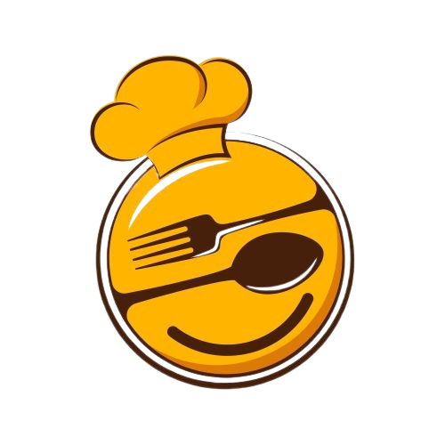

  <ion-toolbar>
    <ion-buttons slot="start">
      <ion-back-button fallbackHref="/home"></ion-back-button>
    </ion-buttons>
    <div>
    <ion-avatar>
      
    </ion-avatar>
      <ion-title class="ion-no-padding"> Cook to eat </ion-title>
    </div>
      <ion-buttons slot="end">
        <ion-button (click)="onShare()">
          <ion-icon slot="icon-only" name="share-social-outline" color="warning"></ion-icon>
        </ion-button>
      </ion-buttons>
  </ion-toolbar>
